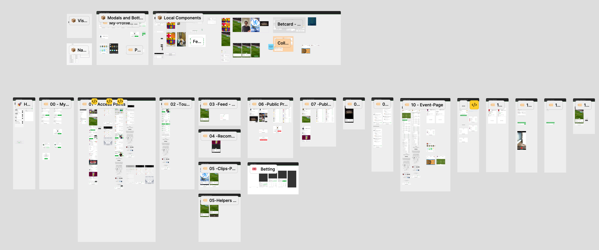

Global Gaming Experience — UI/UX Strategy & Design
Leading UX strategy, research, and feature definition for a live platform with millions of daily users.
Context
This project focused on improving engagement and retention for a large-scale sportsbook platform. Used by millions of players across multiple regions, the system was already successful, but needed to evolve.
As Head of UX, my goal was to modernize the user experience. I worked to create better flow clarity and a more cohesive design that simplified complex socialized betting workflows.
I collaborated deeply with stakeholders, Product Managers, developers, and data teams to ensure our design strategy was both technically feasible and backed by real user behavior.
My Contribution
As Head of UX, I bridged the gap between global business goals and user needs by driving UX maturity and creating a data-led design culture.
UX Strategy & Maturity
- Led the move to data-backed decisions, ensuring every design choice was validated by user behavior.
- Orchestrated weekly global critiques with teams in the UK, Sweden, Australia, and South Africa.
- Mentored PMs to run their own early-stage tests, accelerating the delivery cycle.
Research & Intelligence
- Built a Living Persona System to help teams empathize with millions of global players.
- Partnered with Data Analysts to track Product Stickiness and behavioral clickstreams (PowerBI).
- Led A/B testing and usability studies to mitigate risks for high-traffic feature launches.
Global Orchestration
- Shaped social features and sportsbook improvements from concept to global launch.
- Coordinated multi-disciplinary teams in a high-volume, fast-moving environment.
- Bridged communication between Engineering, Design, and Business Leadership.
Evidence of Work
Delivering end-to-end UX for millions of users. These structural overviews showcase the mapping and research defining our platform's scale.
Mentoring & UX Maturity
I worked closely with design and product teams to scale UX maturity through interactive workshops. We focused on integrating the user's voice into the early discovery phase, measuring A/B testing on production, and establishing research as a prerequisite for change.
View Detailed Case Study
Behavioral Analysis & Synthesis
Extensive research synthesis demonstrating how raw qualitative feedback and multi-region focus groups were organized and translated into actionable product strategies.
View Detailed Case Study.jpg)
Usability & Research Synthesis
Translating multi-variate testing results and internal surveys into a unified, actionable product roadmap. I distilled raw data into structured insights to guide long-term engineering and design priorities.
View Detailed Case Study
Mapping Core User Journeys
Led the early-stage mapping and rigorous testing of highly complex UX flows. My focus was entirely on aligning user logic, unblocking navigation, and ensuring seamless structural journeys rather than designing visual UI components.
View Detailed Case StudyMain Challenges
Addressing complex constraints and high-scale performance requirements across multi-region legacy systems.
Global Scaling
Designing for a massive, multi-region user base with diverse cultural and betting behaviors without compromising simplicity.
Service Continuity
Optimizing a live system serving millions of users daily. Every design update had to maintain 100% performance uptime.
Research Under NDA
Navigating strict confidentiality while conducting deep user studies to validate core betting loops and socialization features.
Ethical UX
Leading with empathy to prevent "dark patterns," ensuring that the excitement of gaming remains a fair and healthy experience.
Data-Driven Prioritization
By analyzing onboarding drop-off rates, we identified that 46% of users were skipping the flow entirely, landing on an uninspiring empty feed. Behavioral research led us to replace the static onboarding with an immediate, regionalized feed based on user location, paired with frictionless personalization.
This strategic shift eliminated the friction point and drove a significant, measurable spike in feed interaction and day-one retention across our global markets.
Impact & Results
My leadership shifted the focus from tactical design to strategic UX value, driving measurable growth and business expansion.
Millions
Global Reach
Delivered core features and socialization tools used by a massive daily player base worldwide.
Measured
Increased Retention
Smoother user flows and channel selectors led to clearer paths and higher player satisfaction.
Faster
Team Alignment
Bridged internal silos, allowing multidisciplinary teams to make confident, data-backed decisions.
From Culture Shift to New Partnerships
Our internal UX transformation was so successful it directly influenced our external business growth, opening doors to major industry collaborations.
- Games Global Collaboration: Led high-level UX strategy and process alignment with one of the industry's biggest players.
- Process Reform: Overhauled research methodologies to move from assumptions to uncovering real user pain points.
- Institutional Quality: Permanently raised the standard of product quality, securing the company's reputation as a UX leader in gaming.
Why this project matters to my design practice
This project was a defining chapter in my growth as a designer working at global scale. I learned how to transform high-level ambiguity into structured product direction, guiding complex conversations between multi-region teams while anchoring every decision in research and data.
Beyond the metrics, it deepened my practice in systems thinking, high-volume user experience, and cross-cultural collaboration—proving that even within the strictest constraints, user-centered design can drive both product excellence and major business expansion.